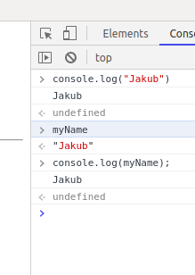

We can enter into web text by JS script using command on the bottom of the page as is "Jakub" if we won't create place for it:
document.write(variable) but befor we need to declare our variable - check the js file
We can also put the variable into console only using such a command:
console.log(variable) - as above it needs to be declared
